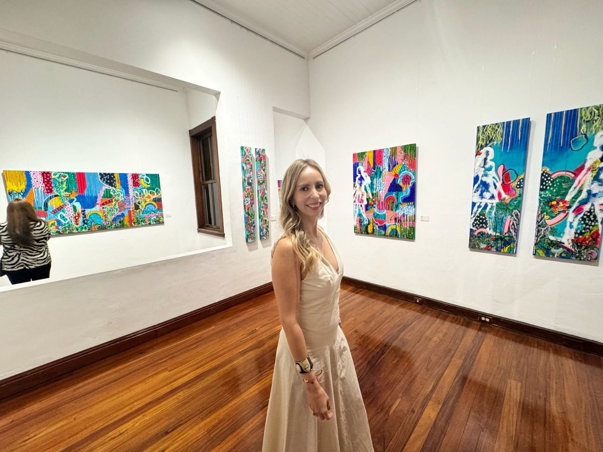
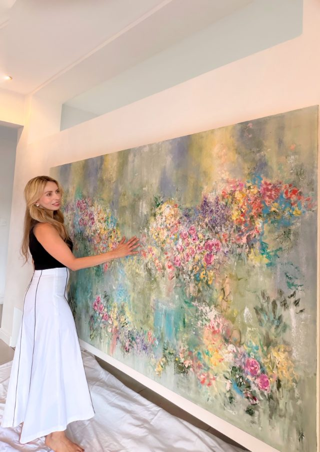
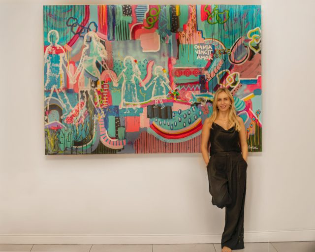
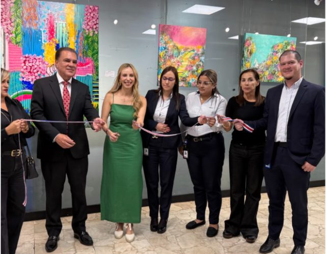
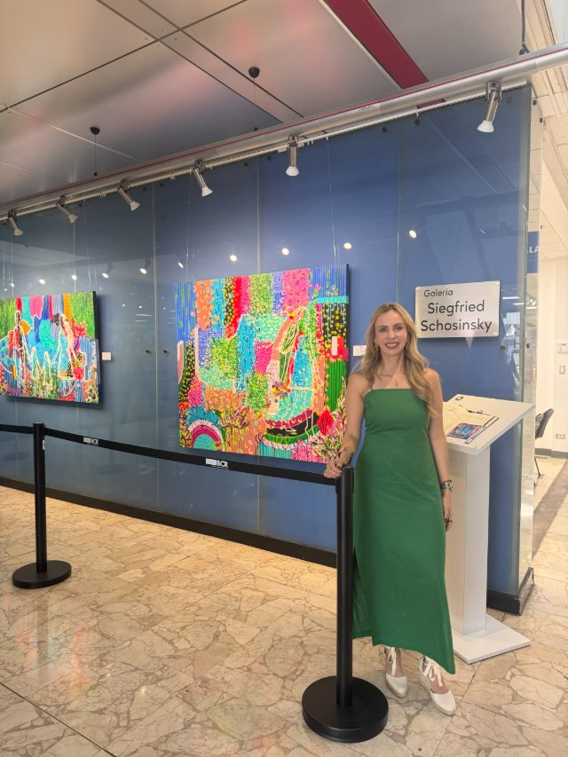

Rocío Villamizar
Artista

Los últimos 18 años de mi vida han sido influenciados por vivencias personales en Latinoamérica, el Caribe e Inglaterra. He aprendido a capturar la esencia de la vida en lienzos.
Cada trazo que ven en mis obras lleva consigo un mensaje profundo y una sensibilidad única. Mi inspiración nace de la naturaleza, la humanidad y las emociones que fluyen a través de nuestras vidas.
Las figuras que plasmo en mis lienzos son el reflejo de esos sentimientos y experiencias.
Mis jardines son paisajes imaginarios donde la naturaleza, la memoria y las emociones se encuentran.
Rocío Villamizar
En el estudio




Exposiciones
- 2026Concorso Internazionale di Pittura, Nelvis FormasinRoma, Italia
-
2026
Banco de Costa Rica, Galería Siegfried SchosinskyCosta RicaOrigen: la inauguración en la galería del banco.


- 2026Aeropuerto Juan Santamaría, sala VIPBAC Credomatic
- 2025Biennale Internazionale d’Arte della Riviera RomanaRoma, Italia
- 2025Aeropuerto Juan Santamaría, sala VIPBAC Credomatic
- 2025Galería TaletumSan José, Costa Rica
- 2024Aeropuerto Juan Santamaría, sala VIPBAC Credomatic
- 2023Aeropuerto Juan Santamaría, sala VIPVisa
- 2022FN ART GalleryLindora, Costa Rica
- 2021The Golden Ratio, Palazzo RuspoliRoma, Italia
- 2018Parque LageRío de Janeiro, Brasil
- 2018ScenariumRío de Janeiro, Brasil
- 2017ScenariumRío de Janeiro, Brasil
- 2016EmbrujarteCosta Rica
- 2015Art Walk, Avenida EscazúCosta Rica
- 2014EmbrujarteCosta Rica
- 2013Cariocarte, Fundación de BrasilCosta Rica
Estudios y cursos
- 2026Laboratorio de Color
- 2023Seminario con Alejandro Rosenberg
- 2022Psicología del ArteUniversidad Creativa de Costa Rica
- 2021Workshops con la artista costarricense Olga Duarte
- 2018Parque LageRío de Janeiro, Brasil
- 2017Parque LageRío de Janeiro, Brasil
- 2016London Atelier of Representational ArtLondres, Inglaterra
- 2012Parque LageRío de Janeiro, Brasil
Más de mi arte
En mi página y en mis redes sociales se puede encontrar más información sobre mi arte.
www.rocioarts.com Instagram · rocioarts Facebook · Rocioarts
Entrevista
Te comparto esta entrevista. Es una experiencia que me llena de felicidad: aquí pude mostrar un poco más de mis obras y de mí, como artista y como mujer colombiana y costarricense.
Si quieres una obra, o ver el estudio, escríbeme.
WhatsApp